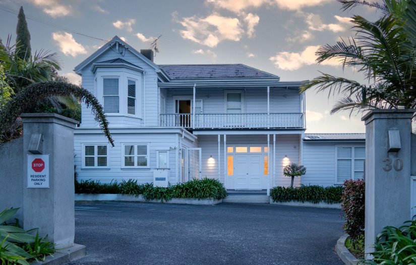
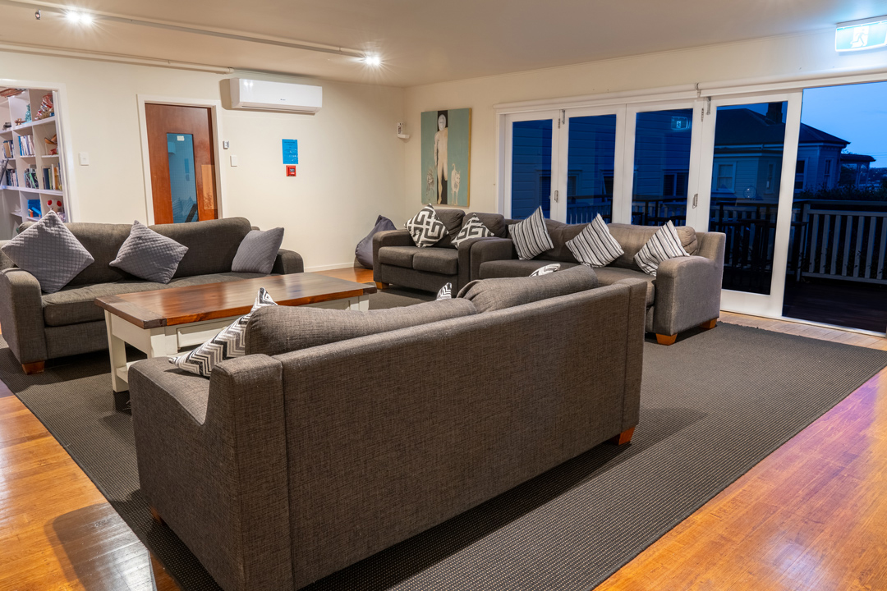
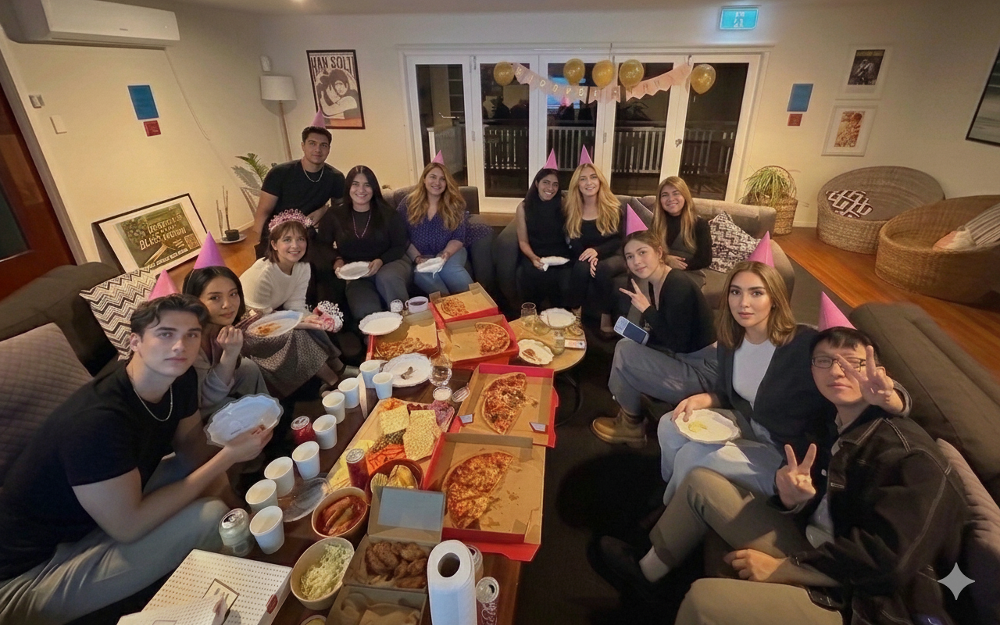

異国の地で、
心安らぐ
「おもてなし」を。
ニュージーランドの開放的なライフスタイルと、日本のきめ細やかな「おもてなし」が美しく融和する場所。私たちは、単なる「住まい」以上の感情を、ここシェリービーチでご提供します。

設立の想い

「スーツケース一つで、すぐに自分らしくいられる場所を。」
海外生活の始まりは、期待と不安が交錯するものです。特にオークランドのような都市での新生活は、住まい探しや学手続きの煩雑さだけでも大きな負担となりがちです。
ラグジュアリーな空間に日本人の感性に沿った細やかなサポートを、私たちは皆様のニュージーランド生活における「素家」のような、安心で安定できる基盤でありたいと思っています。
01
静寂と調和
オークランド随一の景観地に位置する静かな住宅地で、忙しい日々の中にも自分を見つめ直せる静かな時間をご提供します。
02
安心できる環境
同じ文化背景を持つ入居者が多く、自然と馴染みやすい空間。海外生活でも安心して新しい生活を始められます。
03
コミュニティの質
同じ目線を持って生きてきた者同士の自然な交流。共有スペースで繋がり、あなたの固タイプが合う上質だなコミュニティに出会えます。

Saint Marys Bay, Auckland
オークランド中心部から車で約10分。海岸線とシティビューを同時に楽しめる、理想的なロケーション。閑静な住宅街でありながら、スーパーマーケットや飲食店へも徒歩圏内です。